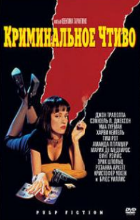

«Криминальное чтиво» — кинофильм режиссёра Квентина тарантино [1]
Сюжет фильма нелинеен, как и почти во всех остальных работах
Тарантино[1].
В фильме рассказывается несколько историй, в которых показаны ограбления,
философские дискуссии двух гангстеров, спасение девушки от передозировки
наркотиков и боксёр, которого обманули.
Незванне является отсылкой к популярным в вередине XX века в США pulp журналам.
Именно в стиле таких журналов были оформлены афиши, а позднее саундтрек.
видеокассеты и DVD с фильмом.
Фильм состоит из шести частей, которые перемешаны и показаны в
«неправильном» порядке.